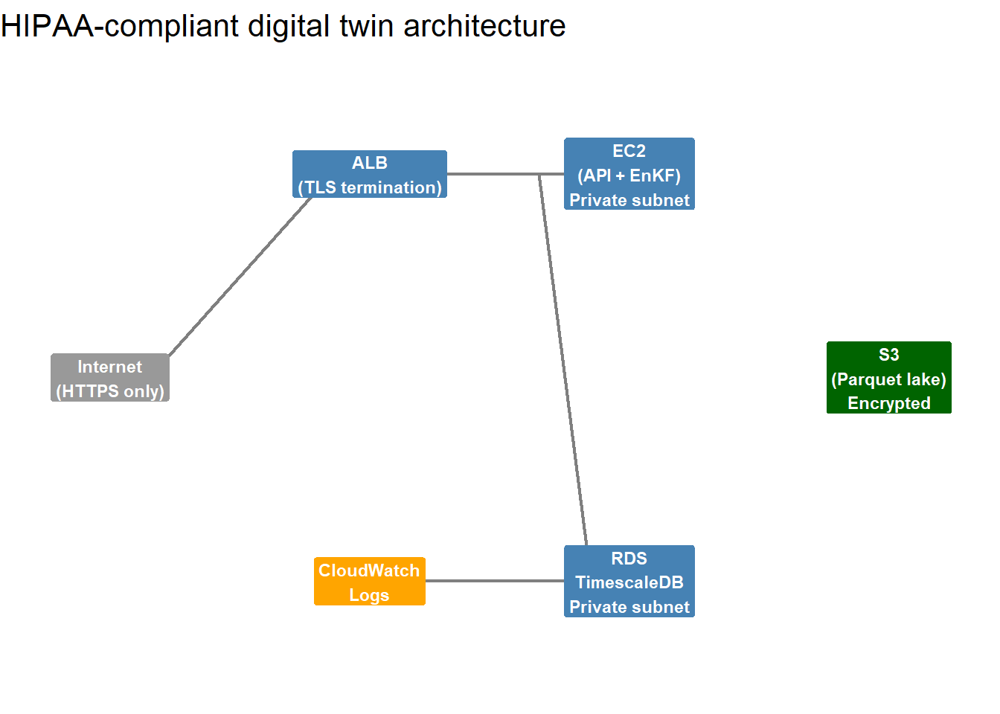

| Service | HIPAA_Eligible | Use_in_DT | Encryption_Default |
|---|---|---|---|
| EC2 | Yes | API + EnKF server | No (add EBS encryption) |
| RDS (PostgreSQL) | Yes | TimescaleDB | Yes |
| S3 | Yes | Data lake / backups | Yes |
| Secrets Manager | Yes | Credentials | Yes |
| CloudWatch Logs | Yes | Audit logs | Yes |
| VPC | Yes | Network isolation | N/A |
| IAM | Yes | Access control | N/A |
| KMS | Yes | Encryption keys | N/A |
| ELB/ALB | Yes | HTTPS termination | Yes |
| Lambda | Yes | Scheduled jobs | N/A |
HIPAA-Aware Architecture Patterns for Health Data on AWS
Any US health department client will ask about HIPAA. Design for compliance from the start — the right AWS services, the right configurations, the right documentation. Skill 20 of 20.
business skills
HIPAA
compliance
AWS
security
health data
1 HIPAA and your business
The Health Insurance Portability and Accountability Act (1) governs Protected Health Information (PHI) in the United States. If your digital twin processes surveillance data that could identify individual patients — hospital admissions by age/sex/zip code, for example — you are likely handling PHI.
HIPAA compliance is not a product feature; it is a prerequisite for US government health contracts. A health department procurement team will ask three questions:
- Do you have a Business Associate Agreement (BAA)?
- Which AWS services do you use, and do they cover PHI under the BAA?
- How do you enforce minimum necessary access?
Answering yes, accurately, to all three unlocks contracts that competitors without HIPAA posture cannot win.
2 What HIPAA requires technically
The HIPAA Security Rule (2) specifies three safeguard categories:
Administrative: who is authorised, what training they have, what your incident response plan is.
Physical: where your servers are, who can access them (less relevant for cloud deployments — AWS handles this under the BAA).
Technical: encryption at rest and in transit, access controls, audit logs, automatic session timeout.
The technical safeguards map directly to AWS service configurations.
3 HIPAA-eligible AWS services
Not all AWS services are covered under the BAA. The key ones for your digital twin stack:
Enable encryption at rest explicitly for EC2 EBS volumes — it is not on by default.
4 Architecture checklist
library(ggplot2)
# Architecture diagram as a text figure
df_nodes <- data.frame(
x = c(1, 3, 3, 5, 5, 7),
y = c(3, 5, 1, 5, 1, 3),
label = c("Internet\n(HTTPS only)",
"ALB\n(TLS termination)",
"CloudWatch\nLogs",
"EC2\n(API + EnKF)\nPrivate subnet",
"RDS\nTimescaleDB\nPrivate subnet",
"S3\n(Parquet lake)\nEncrypted"),
colour = c("grey60","steelblue","orange","steelblue","steelblue","darkgreen")
)
df_edges <- data.frame(
x = c(1.3, 3.3, 4.3, 3.3),
xend = c(2.7, 4.7, 4.7, 4.7),
y = c(3, 5, 5, 1),
yend = c(5, 5, 1, 1)
)
ggplot() +
geom_segment(data = df_edges,
aes(x=x, xend=xend, y=y, yend=yend),
arrow = arrow(length=unit(0.2,"cm")),
colour = "grey50", linewidth = 0.8) +
geom_label(data = df_nodes, aes(x=x, y=y, label=label, fill=colour),
colour = "white", size = 3, label.size = 0, fontface = "bold") +
scale_fill_identity() +
xlim(0.5, 7.5) + ylim(0, 6) +
labs(title = "HIPAA-compliant digital twin architecture") +
theme_void(base_size = 13)
5 The 10 technical controls
| Control | AWS_Mechanism | Priority |
|---|---|---|
| Encryption in transit (TLS 1.2+) | ALB + ACM certificate | Required |
| Encryption at rest (AES-256) | RDS encryption, S3 SSE-KMS, EBS encryption | Required |
| Network isolation (VPC, no public DB) | Private subnets, security groups | Required |
| Minimum privilege IAM roles | IAM roles with least-privilege policies | Required |
| Multi-factor authentication for console | AWS IAM Identity Center | Required |
| Audit logging (CloudTrail + CloudWatch) | CloudTrail data events, VPC flow logs | Required |
| Automatic session timeout (15 min idle) | Cognito/application-level enforcement | Required |
| Database access logging | PostgreSQL pg_audit extension | Required |
| Backup with 7-year retention | RDS automated backups + S3 lifecycle | Required |
| Incident response plan documented | Written policy document + tested procedure | Required |
6 The Business Associate Agreement
Before processing any PHI, sign a BAA with AWS — this is a legal agreement where AWS acknowledges their role as your Business Associate and commits to HIPAA-compliant handling of PHI on their infrastructure.
Sign it in the AWS console under Account → Business Associate Addendum. It covers all HIPAA-eligible services automatically once signed.
You will also need to sign a BAA with each client — you are their Business Associate when you process their surveillance data. Use a standard template reviewed by a health IT attorney; it is a one-time cost that protects you and signals professionalism.
7 Synthetic data for development
Never use real patient data in development or testing. Generate synthetic surveillance data that has the same statistical properties as real data but cannot be traced to individuals. The simulation code from throughout this series is already doing this — use the same approach for test fixtures.
This practice — using synthetic data in non-production environments — is explicitly recommended by NIST 800-53 (2) and eliminates most PHI risk from your development workflow.
8 Beyond the checklist
HIPAA compliance is not a one-time audit — it is ongoing. Key practices after go-live:
- Annual security review: re-run the checklist and update documentation
- Penetration testing: hire an external firm to test your API annually
- Employee training: anyone who touches production data needs annual HIPAA training
- Breach response: you have 60 days to notify HHS of a breach affecting 500+ individuals
A compliance posture that is documented, tested, and maintained is worth far more to a health department procurement team than a checkbox in a sales deck.
9 References
1.
U.S. Department of Health and Human Services. Health insurance portability and accountability act (HIPAA) of 1996 [Internet]. 1996. Available from: https://www.hhs.gov/hipaa/
2.
National Institute of Standards and Technology. NIST special publication 800-53: Security and privacy controls for information systems and organizations [Internet]. 2020. Available from: https://csrc.nist.gov/publications/detail/sp/800-53/rev-5/final